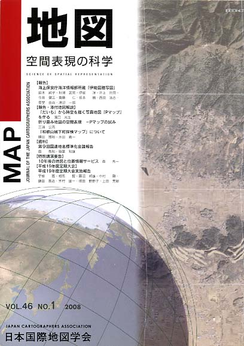
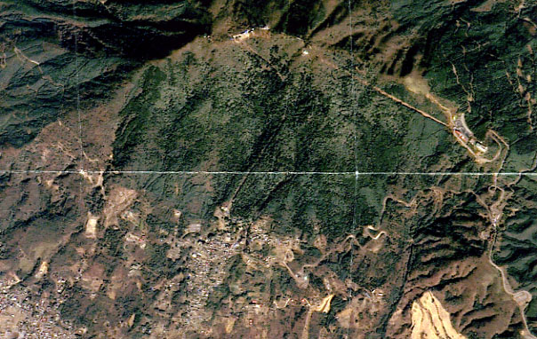

≪No.46 No.1 添付地図−抜粋≫

本図を許可なく複製・利用することを禁止します。
| 最 新 号 | バックナンバー | 添付地図目録 | 投 稿 規 程 |
Vol.46 No.1 （通巻１８１号） ２００８年
| 【報告】 | 海上保安庁海洋情報部所蔵「伊能図謄写図」 | 鈴木純子・秋場武晃・伊能 洋・井上均見・今井健三・齋藤 仁・坂本 巍・西田浩志・星埜由尚・渡辺一郎 |
| キーワード：海上保安庁、海洋情報部、伊能図、大図 | ||
| 【報告・添付地図解説】 | 「だいち」から時空を描く写真地図『Pマップ』を作る | 濱口光生 |
| キーワード：人工衛星画像、JAXA、ALOS、だいち、Pマップ、ミウラ折り | ||
| 折り畳み地図の空間表現 −Pマップの試み | 三浦公亮 | |
| キーワード：miura-ori、ミウラ折り、折り畳み地図、JAXA、Pマップ | ||
| 「和歌山城下町探検マップ」について | 額田 雅裕・水田 義一 | |
| キーワード：和歌山、城下町絵図、安政２年（1855）、観光地図 | ||
| 【資料】 | 第9回国連地名標準化会議報告 | 南 秀和・稲葉和雄 |
| キーワード：国連地名標準化会議、国連地名専門家グループ（UNGEGN）、地名のローマ字表記、日本海 | ||
| 【特別講演要旨】 | 10年後の地図と位置情報サービス | 森 秀一 |
| 【平成19年度定期大会】 | 平成19年度定期大会実施報告 | 宇根 寛・相馬 賢・藤沼邦雄・中村 剛・鎌田高造・木村雄一・塚田野野子・上田秀敏 |
| 【書評・紹介】 | 図説 世界の地域問題 | 戸井田克己 |
| GISのためのモデリング入門 | 政春 尋志 | |
| 【特別会員のページ】 | （財）国土地理協会 | |
| ゼンリンデータコム | ||
| 【学会記事】 | ||
| 【添付地図】 | Pマップ「筑波」 | |
| 和歌山城下町探検マップ | ||
|
≪No.46 No.1 表紙≫ |
|
|  |
|
|
|
≪No.46 No.1 添付地図−抜粋≫ |
| 
本図を許可なく複製・利用することを禁止します。
|